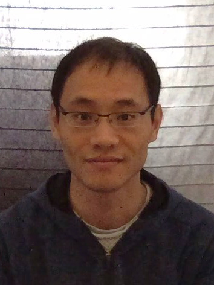

|

|
I am currently a Leverhulme Early Career Fellowship at Department of Applied Mathematics and Theoretical Physics University of Cambridge. I am also a member of the group Cambridge Image Analysis. I received my Ph.D. from ENSICAEN and University of Caen Normandy advised by Jalal Fadili and Gabriel Peyré. I received my master degree from Shanghai Jiao Tong University under the supervision of Xiaoqun Zhang. Prior to that I obtained my bachlor degree in Electrical & Information Engineering from Nanjing University of Posts and Telecommunications. |
Contact
- E-mail: jl993 AT cam.ac.uk
- Office: Pav. F2.04
- Address: DAMTP, Centre for Mathematical Sciences, Wilberforce Road, Cambridge, CB3 0WA, UK
Research interests
- Non-smooth Optimization, Image Processing.
Short bio
- 2019-Now: Leverhulme Early Career Fellowship, DAMTP, University of Cambridge.
- 2017-2019: Postdoc research associate, DAMTP, University of Cambridge.
- 2013-2016: Ph.D. in Applied Mathematics, GREYC, ENSICAEN and University of Caen Normandy.
- 2012-2013: Research intern, GREYC, ENSICAEN and University of Caen Normandy.
- 2010-2013: M.S. in Applied Mathematics, School of Mathematics & Institute of Natural Sciences, Shanghai Jiao Tong University.
- 2006-2010: B.S. in Electrical & Information Engineering, School of Telecom. and Information Engineering, Nanjing University of Posts and Telecommunications.